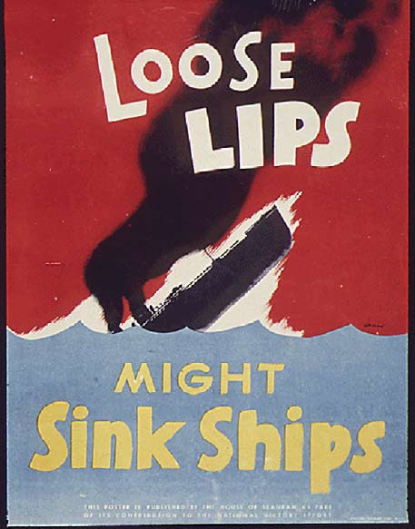

Personal Workstation Safety Checks and Utilities
Installation
devtools::install_github("ropenscilabs/ropsec")To have vignettes available locally:
devtools::install_github("ropenscilabs/ropsec", build_vignettes = TRUE)Usage
library(ropsec)Sign commits with GPG key
For details see vignette("sign-commits", "ropsec").
key <- sign_commits_with_key("John Doe", "john.doe@gmail.com")
store_public_key(key)
Lightweight system checks
ropsec::summarize_system_checks()✔ | OK F W S | Context
✔ | 1 | SSH Configuration - existence
✔ | 2 | SSH Configuration - keys
✔ | 1 | SSH Configuration - key size
✔ | 1 | GPG Existence
✔ | 1 | macOS requires password after sleep or screen saver kicks in [0.1 s]
✖ | 0 1 | Firewall is enabled
# ...Collaborators
- Bob Rudis @hrbrmstr
- Kara Woo @karawoo
- Karthik Ram @karthik
- Ildi Czeller @czeildi
Please note that the ropsec project is released with a Contributor Code of Conduct. By contributing to this project, you agree to abide by its terms.